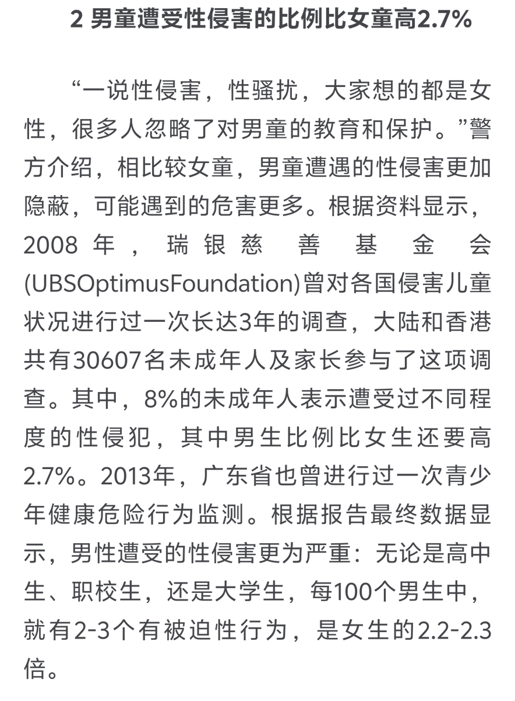
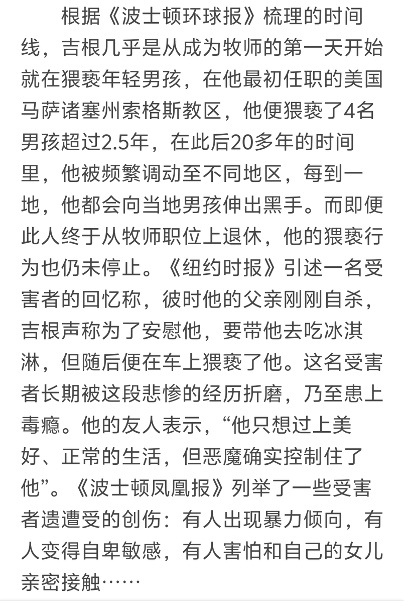

RT @hyyp1246753: 明明受害者有女有男，中文翻译“萝莉岛”强调女受害，让男的觉得男性的屁眼很安全。
实际上按照男男互害的调性，男孩的屁眼才是最危险的。08年瑞银慈善基金会调查过，男童受性侵比例比女童还要高2.7%。21年美国天主教会性侵丑闻中，九成受害者为男童。…

实际上按照男男互害的调性，男孩的屁眼才是最危险的。08年瑞银慈善基金会调查过，男童受性侵比例比女童还要高2.7%。21年美国天主教会性侵丑闻中，九成受害者为男童。…


明明受害者有女有男，中文翻译“萝莉岛”强调女受害，让男的觉得男性的屁眼很安全。
实际上按照男男互害的调性，男孩的屁眼才是最危险的。08年瑞银慈善基金会调查过，男童受性侵比例比女童还要高2.7%。21年美国天主教会性侵丑闻中，九成受害者为男童。
凭什么爱泼斯坦岛不能翻译为“神父快乐岛”“正太岛” https://t.co/zJDDZjB4zt
实际上按照男男互害的调性，男孩的屁眼才是最危险的。08年瑞银慈善基金会调查过，男童受性侵比例比女童还要高2.7%。21年美国天主教会性侵丑闻中，九成受害者为男童。
凭什么爱泼斯坦岛不能翻译为“神父快乐岛”“正太岛” https://t.co/zJDDZjB4zt